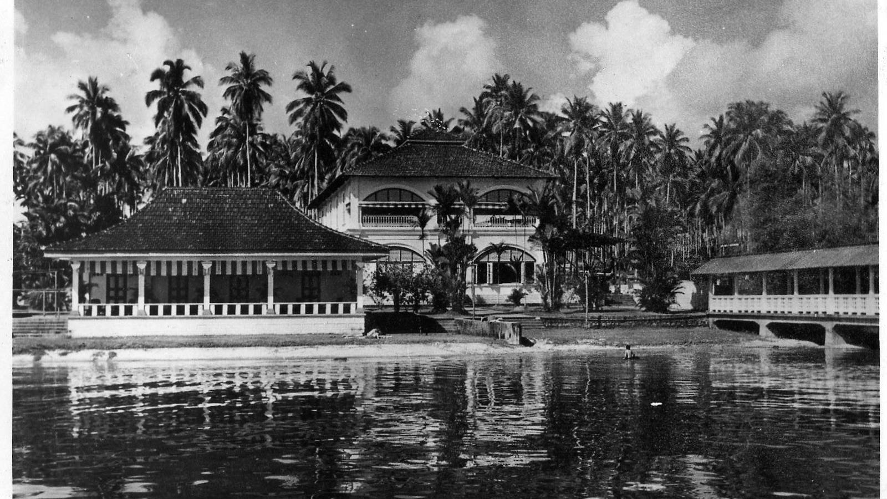

Pasir Ris, which means “white sand” in Malay, describes the stretch of white sandy beach along the northeastern coastline of Singapore.
Pasir Ris was originally a low-lying, undeveloped area with kampongs and villages, such as Kampong Pasir Ris, Kampong Bahru and various Chinese kampongs along Elias Road.
